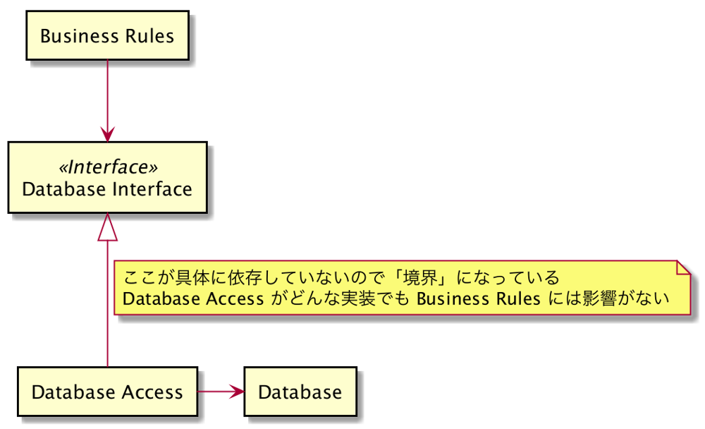

omuomugin
優れたソフトウェア開発チームは、真正面から闘争に立ち向かう。ステークホルダーたちと対等に、ひるむことなく口論する。ソフトウェア開発者もステークホルダーであることは忘れてはいけない。保護すべきソフトウェアに対する責任がある。それがあなたの役割であり、義務である。それがあなたが雇われている大きな理由だ。 — Clean Architecture 達人に学ぶソフトウェアの構造と設計 Robert C.Martin
優れたソフトウェア開発チームは、真正面から闘争に立ち向かう。ステークホルダーたちと対等に、ひるむことなく口論する。ソフトウェア開発者もステークホルダーであることは忘れてはいけない。保護すべきソフトウェアに対する責任がある。それがあなたの役割であり、義務である。それがあなたが雇われている大きな理由だ。
— Clean Architecture 達人に学ぶソフトウェアの構造と設計 Robert C.Martin
ソフトウェアアーキテクチャの目的は、求められるシステムを構築・保守するために必要な人材を最小限に抑えることである — Clean Architecture 達人に学ぶソフトウェアの構造と設計 Robert C.Martin
ソフトウェアアーキテクチャの目的は、求められるシステムを構築・保守するために必要な人材を最小限に抑えることである
優れたアーキテクチャは、ユースケースを中心にしているため、フレームワーク、ツール、環境に依存することなく、 ユースケースをサポートする構造を問題なく説明できる。 — Clean Architecture 達人に学ぶソフトウェアの構造と設計 Robert C.Martin
優れたアーキテクチャは、ユースケースを中心にしているため、フレームワーク、ツール、環境に依存することなく、 ユースケースをサポートする構造を問題なく説明できる。
自動化されたシステムを定義・制限することによって、ビジネスのお金を生み出したり節約したりする ビジネスルール もある — Clean Architecture 達人に学ぶソフトウェアの構造と設計 Robert C.Martin
自動化されたシステムを定義・制限することによって、ビジネスのお金を生み出したり節約したりする ビジネスルール もある
人々のパワーを奪うものは何か？それは 結合 である。それも早すぎる決定との結合である。 — Clean Architecture 達人に学ぶソフトウェアの構造と設計 Robert C.Martin
人々のパワーを奪うものは何か？それは 結合 である。それも早すぎる決定との結合である。
ソフトウェアの要素を分離し、お互いのことがわからないように制限するというもの — Clean Architecture 達人に学ぶソフトウェアの構造と設計 Robert C.Martin
ソフトウェアの要素を分離し、お互いのことがわからないように制限するというもの

システムアーキテクチャがユースケースをサポートするものであり、フレームワークから少し距離を置いたものになっていれば、フレームワークを使うことなく、すべてのユースケースのユニットテストを実行できるはずだ。 — Clean Architecture 達人に学ぶソフトウェアの構造と設計 Robert C.Martin
システムアーキテクチャがユースケースをサポートするものであり、フレームワークから少し距離を置いたものになっていれば、フレームワークを使うことなく、すべてのユースケースのユニットテストを実行できるはずだ。
テストを書くとうまい、やすい！ see also 質とスピード by t_wada
ドメイン関連のコードがそうした膨大な他のコードの中に拡散してしまうと、コードを見て意味を理解するのがきわめて困難になる。 ドメイン層を分離してはじめて、モデル駆動開発が可能になるのだ。 — ドメイン駆動設計 Eric Evans
複雑なプログラムはレイヤに分割すること。各レイヤで設計を進め、凝集度を高めて下位層だけに依存するようにすること。標準的なアーキテクチャパターンに従って、上位のレイヤに対しては疎結合にすること。ドメインモデルに関係するコード全部を１つの層に集中させ、ユーザーインターフェース、アプリケーション、インフラストラクチャのコードから分離すること。 — ドメイン駆動設計 Eric Evans
複雑なプログラムはレイヤに分割すること。各レイヤで設計を進め、凝集度を高めて下位層だけに依存するようにすること。標準的なアーキテクチャパターンに従って、上位のレイヤに対しては疎結合にすること。ドメインモデルに関係するコード全部を１つの層に集中させ、ユーザーインターフェース、アプリケーション、インフラストラクチャのコードから分離すること。
— ドメイン駆動設計 Eric Evans
ユーザーに情報を表示して、ユーザーのコマンドを解釈する責務を負う。外部のアクタは人間のユーザーではなく、別のコンピュータシステムのこともある — ドメイン駆動設計 Eric Evans
ユーザーに情報を表示して、ユーザーのコマンドを解釈する責務を負う。外部のアクタは人間のユーザーではなく、別のコンピュータシステムのこともある
振る舞いを2つのモジュールまたは、クラスに分割するだけである。ひとつのモジュールは「Humble(控えめ)」で、ここにはテストが難しい振る舞いのみが含まれる。もうひとつのモジュールには、Humble Objectから取り除かれたテストしやすい振る舞いが含まれる。 — Clean Architecture 達人に学ぶソフトウェアの構造と設計 Robert C.Martin
振る舞いを2つのモジュールまたは、クラスに分割するだけである。ひとつのモジュールは「Humble(控えめ)」で、ここにはテストが難しい振る舞いのみが含まれる。もうひとつのモジュールには、Humble Objectから取り除かれたテストしやすい振る舞いが含まれる。
findViewWithText("1").click(); findViewWithText("0").click(); findViewWithText("0").click(); findViewWithText("Send").click(); // 計算結果に時間がかかるかも Theread.sleep(1000); // 計算が成功したことを通知するテキストが出てくることを確認 findViewWithText("Success!");
// Test Code PaymentRobot payment = new PaymentRobot(); payment.amount(100); payment.send(); // e.g. class PaymentRobot { PaymentRobot amount(int amount) { findViewWithText("1").click(); findViewWithText("0").click(); findViewWithText("0").click(); } void send() { findViewWithText("Send").click(); } }
interface View { void showSuccessMessage(); } class ViewImpl implements View { // Event通知 void onTapSend() { this.presenter.onTapSend(this.amount); } // void showSuccessMessage() { // show "Success!"; } // ... } class Presenter { void onTapSend(int ammount) { // ... // ユースケースに委譲したり、いろんな計算を行う // ... // 理想は ViewModel みたいなオブジェクトが渡せるとテストが容易 this.view.showSuccessMessage(); } }
ソフトウェアが行うことになっている仕事を定義し、表現力豊かなドメインオブジェクトが問題を解決するように導く。 このレイヤが責務を負う作業は、ビジネスにとって意味のあるものか、あるいは他システムのアプリケーション層と相互利用するものに必要なものである。 — ドメイン駆動設計 Eric Evans
ソフトウェアが行うことになっている仕事を定義し、表現力豊かなドメインオブジェクトが問題を解決するように導く。 このレイヤが責務を負う作業は、ビジネスにとって意味のあるものか、あるいは他システムのアプリケーション層と相互利用するものに必要なものである。
ビジネスの概念とビジネスが置かれた状況に関する情報、およびビジネスルールを表す責務を負う。 ビジネスの状況を反映する状態はここで制御され使用されうるが、それを格納するという技術的な詳細は、インフラストラクチャに委譲される。 この層がビジネスソフトウェアの核心である。 — ドメイン駆動設計 Eric Evans
ビジネスの概念とビジネスが置かれた状況に関する情報、およびビジネスルールを表す責務を負う。 ビジネスの状況を反映する状態はここで制御され使用されうるが、それを格納するという技術的な詳細は、インフラストラクチャに委譲される。 この層がビジネスソフトウェアの核心である。
設計をできる限り明確にしつつ、実践的に進めていくと、概念的にどのオブジェクトにも属さないような操作が含まれることがある。強引に決着をつけるのではなく、問題領域に引かれる自然な輪郭に従って、モデルの中に明確にサービスを含めればよい。 — ドメイン駆動設計 Eric Evans
設計をできる限り明確にしつつ、実践的に進めていくと、概念的にどのオブジェクトにも属さないような操作が含まれることがある。強引に決着をつけるのではなく、問題領域に引かれる自然な輪郭に従って、モデルの中に明確にサービスを含めればよい。
集約ルートに対してのみ、リポジトリを提供すること。クライアントをモデルに集中させ、あらゆるオブジェクトの格納とアクセスをリポジトリに委譲すること。 — ドメイン駆動設計 Eric Evans
集約ルートに対してのみ、リポジトリを提供すること。クライアントをモデルに集中させ、あらゆるオブジェクトの格納とアクセスをリポジトリに委譲すること。
上位のレイヤを支える一般的な技術詳細を提供する。これには、アプリケーションのためのメッセージ送信、ドメインのための永続化、ユーザーインターフェースのためのウィジェット描画などがある。インフラストラクチャ層は、ここで示す4層間における総悟利用のパターンもアーキテクチャフレームワークを通じてサポートすることがある。 — ドメイン駆動設計 Eric Evans
上位のレイヤを支える一般的な技術詳細を提供する。これには、アプリケーションのためのメッセージ送信、ドメインのための永続化、ユーザーインターフェースのためのウィジェット描画などがある。インフラストラクチャ層は、ここで示す4層間における総悟利用のパターンもアーキテクチャフレームワークを通じてサポートすることがある。
４つ以外にも必要なものはあるだろう。この4つ以外は認めないというルールはない。 ただし依存性のルールは常に適用される。 — Clean Architecture 達人に学ぶソフトウェアの構造と設計 Robert C.Martin
４つ以外にも必要なものはあるだろう。この4つ以外は認めないというルールはない。 ただし依存性のルールは常に適用される。
ビジネスルール、エンタープライズビジネスロジック、アプリケーションビジネスロジック、ドメインモデル、ドメインサービス、エンティティ、最重要ビジネスルール、アプリケーションサービス、ユースケース、バウンダリー、依存性逆転、レイヤードアーキテクチャ、Humble Object Pattern、Robot Pattern、Service、集約、Repository